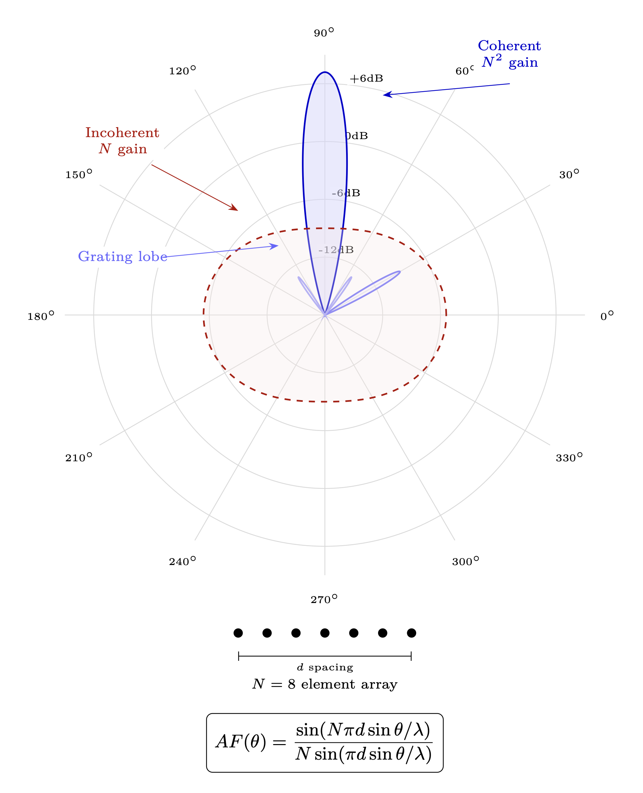

Chapter 8: Phased Array Humanity
Mathematical Framework for Collective Coherence
KEY FINDINGS — Chapter 8: Phased Array Humanity
Evidence-tier key: [L1] established/replicated evidence; [L2] grounded extension with moderate uncertainty; [L3] speculative hypothesis; [L4] conceptual/anecdotal.
- [L1-HIGH]The array factor, directivity, coherent/incoherent power scaling (\(N^2\) vs \(N\)), Von Mises distribution, Kuramoto critical coupling, and grating lobe equations are all standard textbook RF engineering and circular statistics, correctly applied.
- [L1-HIGH]The critical coherence fraction \(f_c = \sqrt {T/N} \approx 0.0035\%\) (~283,000 people for Earth) is a direct mathematical consequence of the SNR threshold model.
- [L2-MEDIUM]Kuramoto phase synchronization dynamics are experimentally validated in human populations (crowd applause, financial markets, pedestrian bridge synchronization).
- [L2-MEDIUM]Social tipping point research (Centola 2018, Xie 2011) confirms threshold-based collective transitions, though at higher fractions than the coherent model predicts — the gap is explained by incoherent vs. phase-coherent minorities.
- [L3-SPECULATIVE]Whether consciousness fields exhibit identical \(N^2\) scaling at population scales remains an open empirical question; the mathematical framework provides a coherent model but large-scale validation has not been conducted.
_________________________________
8.1 Introduction: The Array Analogy
Why this RF analogy works (Chapter 0 foundation): Torsion fields propagate information without energy transfer. When multiple humans align their phase states, they create constructive interference in the torsion field—exactly as antenna elements create constructive RF interference. The N\(^2\) scaling of coherent arrays is a direct consequence of torsion field superposition.
A phased array achieves capabilities impossible for individual antennas by coherently combining signals from multiple elements. The key insight: coherent combination scales as N\(^2\), while incoherent combination scales as N. This quadratic advantage is why phased arrays can detect signals invisible to single receivers and transmit beams that punch through noise floors no individual element could overcome.
Human collective consciousness operates under identical mathematics. Individual humans are antenna elements. Our “phasing”—belief states, emotional coherence, alignment—determines whether we combine constructively or destructively.
This chapter develops the mathematics rigorously, derives threshold conditions for collective coherence effects, and analyzes the dynamics of population-scale synchronization.
_________________________________
8.2 Phased Array Fundamentals
8.2.1 The Array Factor

For N antenna elements located at positions r_n, each with complex weight \(w_n = a_n \cdot e^{j\phi _n}\), the array factor in observation direction \(\theta \) is: \[ AF(\theta ) = \sum _{n=1}^{N} a_n \cdot e^{j\phi _n} \cdot e^{jk\mathbf {r}_n \cdot \hat {\theta }} \] Where:
| Variable | Description |
| \(a_n\) | amplitude of element n (influence, reach) |
| \(\phi _n\) | phase of element n (belief state, coherence) |
| \(k = 2\pi /\lambda \) | wave number |
| \(\mathbf {r}_n\) | position of element n |
| \(\hat {\theta }\) | unit vector in observation direction |
For a uniform linear array with spacing d: \[ AF(\theta ) = \sum _{n=0}^{N-1} a_n \cdot e^{j(n \cdot kd\cos \theta + \phi _n)} \] ### 8.2.2 The Power Pattern
The radiated/received power pattern is |AF(\(\theta \))|\(^2\). This determines where the collective “looks” or “broadcasts” in information space.
Directivity measures how focused the beam is: \[ D = \frac {4\pi \cdot |AF(\theta _{max})|^2}{\int _{4\pi } |AF(\theta )|^2 \, d\Omega } \] High directivity = collective can perceive/access specific information strongly. Low directivity = diffuse awareness, unable to resolve specific truths.
_________________________________
8.3 Coherent vs. Incoherent Populations
8.3.1 The Fully Coherent Case
If all elements are phase-aligned (\(\phi _n = \phi _0\) for all n) with uniform amplitude (\(a_n = 1\)): \[ AF_{coherent}(\theta _0) = N \cdot e^{j\phi _0} \] \[ \left |AF_{coherent}\right |^2 = N^2 \] Power scales as the square of population. A coherent million is not a million times stronger than one—it’s a trillion times stronger in the beam direction.
8.3.2 The Fully Incoherent Case
If phases are uniformly random on \([-\pi , \pi ]\): \[ E[AF_{incoherent}] = \sum _{n=1}^{N} E[e^{j\phi _n}] = 0 \] \[ E[|AF_{incoherent}|^2] = \sum _{n=1}^{N} E[|e^{j\phi _n}|^2] = N \] Power scales linearly. The array performs no better than N independent observers—random phases cause destructive interference that cancels the quadratic advantage.
8.3.3 The Critical Insight
|
Population State | Power Scaling | Directivity | Collective Capability |
|
Fully coherent | \(N^2\) | High (\(\propto N\)) | Maximum |
|
Fully incoherent | \(N\) | ~1 (isotropic) | Noise floor |
|
Ratio | N | N | N-fold advantage |
For Earth’s population (\(N \approx 8 \times 10^9\)), the coherent advantage is 8 billion to one. This quadratic scaling explains why coherence/incoherence is the primary variable determining collective capabilities.
Epistemic Note: The N\(^2\) scaling is mathematically derived from phased array theory, where the physics is well-established. Whether consciousness fields exhibit identical quadratic scaling at population scales remains an open empirical question. The mathematical framework provides a coherent model; empirical validation at global population scales has not been conducted.
_________________________________
8.4 Partial Coherence: The Threshold Model
8.4.1 Two-Population Model
Consider a population where:
- Fraction \(f\) is coherent (\(\phi _n = \phi _0\))
- Fraction \((1-f)\) is incoherent (\(\phi _n\) random)
The array factor separates: \[ AF = AF_{coherent} + AF_{incoherent} \] \[ AF_{coherent} = fN \cdot e^{j\phi _0} \] \[ \left |AF_{incoherent}\right |^2 \approx (1-f)N \quad \text {(expected value)} \] ### 8.4.2 Signal-to-Noise Ratio
The coherent signal must exceed the incoherent noise floor: \[ SNR = \frac {|AF_{coherent}|^2}{E[|AF_{incoherent}|^2]} = \frac {(fN)^2}{(1-f)N} = \frac {f^2 N}{1-f} \] For coherence threshold T (minimum for collective effect): \[ SNR > T \implies f^2 N > T(1-f) \] ### 8.4.3 Critical Coherence Fraction
Solving for the critical fraction \(f_c\): \[ f_c \approx \sqrt {\frac {T}{N}} \quad \text {(for } f \ll 1 \text {)} \] This is the key result. The fraction needed for collective coherence effects scales as \(1/\sqrt {N}\).
| Population \(N\) | \(f_c\) (\(T\)=10) | Coherent individuals needed |
| 10,000 | 3.2% | 320 |
| 1,000,000 | 0.32% | 3,200 |
| 100,000,000 | 0.032% | 32,000 |
| 8,000,000,000 | 0.0035% | ~283,000 |
For Earth (with illustrative threshold \(T = 10\)): approximately 283,000 coherent humans could produce measurable collective effects.
This provides mathematical grounding for “critical mass” intuitions found across traditions.
_________________________________
8.5 The Von Mises Distribution: Continuous Coherence
8.5.1 Phase Distribution
Rather than binary coherent/incoherent, real populations have continuous phase distributions. The von Mises distribution (circular Gaussian) models this: \[ p(\phi ) = \frac {e^{\kappa \cos (\phi - \mu )}}{2\pi I_0(\kappa )} \] Where:
- \(\mu \) = mean direction (“truth” direction)
-
\(\kappa \) = concentration parameter
- \(\kappa \) = 0: uniform (fully incoherent)
- \(\kappa \) \(\rightarrow \) \(\infty \): delta function (fully coherent)
- \(I_0(\kappa )\) = modified Bessel function of the first kind
8.5.2 Order Parameter
The order parameter r measures collective coherence: \[ r = \left | \frac {1}{N} \sum _{n=1}^{N} e^{j\phi _n} \right | \] For von Mises distribution: \[ E[r] = \frac {I_1(\kappa )}{I_0(\kappa )} \]
| \(\kappa \) | E[r] | Interpretation |
| 0 | 0 | Fully incoherent |
| 1 | 0.45 | Mild alignment |
| 2 | 0.70 | Moderate coherence |
| 5 | 0.89 | Strong coherence |
| \(\infty \) | 1 | Perfect alignment |
8.5.3 Directivity vs. Concentration
Expected directivity scales as: \[ E[D] \approx 1 + (N-1) \cdot r^2 \] For large N: \[ E[D] \approx N \cdot r^2 \] Implication: Directivity (collective perception capability) scales with both population AND the square of coherence. Doubling coherence quadruples capability.
_________________________________
8.6 High-Amplitude Nodes: The Influencer Effect
8.6.1 Non-Uniform Amplitude Distribution
Not all humans have equal “amplitude” (influence/reach). Consider:
- \(N_r\) regular individuals with amplitude \(a = 1\)
- \(N_i\) influencers with amplitude \(a = A \gg 1\)
Total power normalization: \(N_r + N_i \cdot A^2 = N_{eff}\)
8.6.2 Coherent Influencer Cluster
If influencers are coherent (aligned) but regular population is random: \[ \left |AF_{influencers}\right |^2 = (N_i \cdot A)^2 \] \[ E[|AF_{noise}|^2] = N_r \] \[ SNR = \frac {(N_i \cdot A)^2}{N_r} \] ### 8.6.3 Critical Influencer Count
For coherence threshold T: \[ N_i > \frac {\sqrt {T \cdot N_r}}{A} \] Example:
- Earth: \(N_r = 8 \times 10^9\)
- Influencer amplification: \(A = 1000\) (reaches 1000\(\times \) more people)
- Threshold: \(T = 10\) \[ N_i > \frac {\sqrt {10 \times 8 \times 10^9}}{1000} \approx 283 \] 283 coherent major influencers could theoretically shift the mass narrative (illustrative, for \(T = 10\) and \(A = 1000\)).
This explains the intense focus on controlling public figures, media personalities, and information gatekeepers.
_________________________________
8.7 Element Quality: Individual Resonance State
This section extends the individual ego/gnosis analysis from Chapter 5 to the collective array level, connecting individual Q factors to collective beam quality.
8.7.1 Individual Resonance State as Element Quality
Each person in a collective array contributes based on their current operating state:
At resonance (gnosis): The individual is a high-quality element —
- Clean signal with amplitude proportional to Q (voltage magnification)
- Stable phase (resonant circuits have well-defined phase at resonance: \(\phi = 0\) relative to the driving signal)
- Effective element gain: \(G_{gnosis} \propto Q\)
Off resonance (ego): The individual is a noisy element —
- Weak, distorted signal with amplitude \(\sim 1\) (no Q amplification)
- Phase wanders (off-resonance circuits have frequency-dependent, unstable phase)
- Effective element gain: \(G_{ego} \sim 1\)
8.7.2 Collective Beam Quality
From Section 8.2, the array factor for N elements: \[AF = \sum _{n=1}^{N} a_n \cdot e^{j\phi _n}\] When fraction \(f\) of the population is in gnosis (resonant, Q-amplified, phase-stable) and \((1-f)\) is in ego mode (unit amplitude, random phase): \[|AF|^2 \approx (f \cdot N \cdot Q_{avg})^2 + (1-f) \cdot N\] First term: coherent contribution from gnosis-state individuals (\(N^2\) scaling). Second term: incoherent noise from ego-state individuals (\(N\) scaling).
Collective SNR: \[SNR_{collective} = \frac {f^2 \cdot N \cdot Q_{avg}^2}{1 - f}\] Key insight: each gnosis-state person contributes \(Q\) times more amplitude than an ego-state person. The collective beam power depends on both the fraction in resonance (\(f\)) AND their individual Q factors.
8.7.3 Why Individual Shadow Work Is a Collective Act
An internally off-resonance (ego-dominated) person joining a collective coherence effort doesn’t just fail to help — they add noise:
- Their random phase (ego-state phase wander) partially cancels other elements
- Their low amplitude adds to the denominator, not the numerator
- Net effect: the collective beam weakens
Conversely, a single person shifting from ego to gnosis (entering resonance) contributes \(Q \times \) more amplitude — potentially a 5-50\(\times \) improvement depending on their Q factor. Shadow work that reduces C and restores individual resonance is therefore a direct contribution to collective coherence.
This is why traditions emphasize individual practice before collective ceremony: you cannot contribute a coherent signal to the array if your own circuit is operating off-resonance.
8.7.4 Cross-References
- Chapter 5: Individual resonance physics — gnosis vs. ego as on-frequency vs. off-frequency RLC operation
- Chapter 9 (Injection Locking): How individual Q determines resistance to narrative capture — high-Q individuals maintain resonance under external injection
_________________________________
8.8 Grating Lobes: False Narratives
8.8.1 The Spacing Problem
In antenna arrays, if element spacing d exceeds \(\lambda \)/2, grating lobes appear—secondary main beams in unintended directions with power equal to the main beam.
Grating lobe directions: \[ \theta _{grating} = \arccos \left (\cos \theta _{main} \pm \frac {m\lambda }{d}\right ), \quad m = 1, 2, ... \] ### 8.8.2 Mapping to Social Topology
Social connectivity d determines the information wavelength the collective can resolve.
- Dense connectivity (small d): Only main beam forms, collective perceives true direction
- Sparse connectivity (large d): Grating lobes form, collective can lock onto false truths
8.8.3 Manufactured Grating Lobes
Control systems can exploit this by:
- 1.
- Fragmenting social connectivity (increasing d)
- Filter bubbles, polarization, platform silos
- 2.
- Injecting energy into grating lobe directions
- Controlled counter-narratives
- “Limited hangouts” that satisfy awakening impulse while pointing away from full truth
- Conspiracy theories that capture attention but misdirect
- 3.
- Steering the main beam to a grating lobe
- Phase manipulation that makes a false direction appear to be the coherent choice
Mathematical signature: A population captured by a grating lobe shows:
- High local coherence (r is high)
- High directivity
- But beam points to \(\theta _{grating} \neq \theta _{truth}\)
This is the model for controlled opposition and limited narrative release.
_________________________________
8.9 Mutual Coupling: Social Influence Dynamics
8.9.1 The Coupling Matrix
In real antenna arrays, adjacent elements mutually influence each other through electromagnetic coupling. The impedance matrix Z relates voltages and currents: \[ \mathbf {V} = \mathbf {Z} \cdot \mathbf {I} \] - Diagonal elements \(Z_{nn}\): self-impedance (individual’s natural state) - Off-diagonal elements \(Z_{nm}\): mutual coupling (social influence)
8.9.2 Effects of Strong Mutual Coupling
Positive effects:
- Faster phase synchronization
- Bandwidth extension (diverse coupled elements can receive broader frequency range)
- Increased robustness (distributed coherence)
Negative effects:
- Scan blindness: Certain directions become inaccessible due to impedance mismatch
- Pattern distortion: Individual patterns are modified by neighbors
- Instability: Perturbations propagate through coupled network
8.9.3 Scan Blindness in Social Systems
Scan blindness occurs at angles where mutual coupling creates impedance mismatch—the array cannot “look” in that direction regardless of commanded phase.
Social equivalent: Topics that a community cannot perceive due to structural coupling patterns, not information availability. The information exists; the social impedance prevents reception.
Scan blindness angles: \[ \theta _{blind} = \arccos \left (\frac {\lambda }{d} \cdot \frac {X_s}{Z_0}\right ) \] Where \(X_s\) = surface wave reactance from coupling (mapping socially to the structural resistance a community has to exploring certain topics) and \(Z_0\) = characteristic impedance (see Chapter 5).
Prediction: Every tightly-coupled social structure has inherent blind spots. The structure itself—not external suppression—creates perception barriers.
_________________________________
8.10 Kuramoto Dynamics: Phase Synchronization
8.10.1 The Kuramoto Model
To model how coherence emerges (or is prevented), we adapt the Kuramoto model of coupled oscillators: \[ \frac {d\phi _n}{dt} = \omega _n + \frac {K}{N} \sum _{m=1}^{N} \sin (\phi _m - \phi _n) + \xi _n(t) \] Where:
| Variable | Description |
| \(\omega _n\) | natural frequency (individual truth-seeking rate) |
| \(K\) | coupling strength (social influence) |
| \(\xi _n(t)\) | noise (random perturbation, external manipulation) |
8.10.2 Order Parameter Dynamics
The collective order parameter r evolves as: \[ r(t) = \left | \frac {1}{N} \sum _{n=1}^{N} e^{j\phi _n(t)} \right | \] Critical coupling \(K_c\): Below \(K_c\), the system remains incoherent (\(r \to 0\)). Above \(K_c\), spontaneous synchronization occurs (\(r \to r_\infty > 0\)).
For identical oscillators: \(K_c = 0\) (any coupling synchronizes)
For distributed natural frequencies (width \(\sigma \)): \[ K_c = \frac {2}{\pi g(0)} \] Where g(0) is the density of oscillators at the mean frequency.
For Gaussian distribution with standard deviation \(\sigma \): \[ K_c = \sqrt {\frac {8}{\pi }} \sigma \approx 1.6\sigma \] ### 8.10.3 Control Implications
To prevent paradigm shifts, control systems must:
- 1.
- Maintain \(K < K_c\): Reduce social coupling
- Atomization, isolation, platform fragmentation
- 2.
- Increase \(\sigma \): Widen frequency distribution
- Polarization, manufactured disagreement, culture wars
- 3.
- Inject noise \(\xi (t)\): Add perturbations
- Information overload, distraction, fear cycles
To enable narrative transformation, coherence movements must:
- 1.
- Increase \(K\): Strengthen social bonds
- Community building, shared practices, network weaving
- 2.
- Decrease \(\sigma \): Align natural frequencies
- Shared frameworks, common language, convergent practices
- 3.
- Reduce noise exposure: Create coherent information environments
8.10.4 Connection to Injection Locking
Injection locking mechanisms—where external signals capture individual oscillators and seed collective coherence—are developed fully in Chapter 9 (Injection Locking). The key insight for phased array dynamics: injection locking enables seeding coherence into otherwise random populations. A small number of high-amplitude, phase-aligned sources can entrain a much larger population (see Chapter 9, Section 4, Prediction 5).
_________________________________
8.11 Evidence Synthesis
8.11.1 Social Tipping Point Research
Centola et al. (2018)
- Experimental demonstration that committed minorities of ~25% can shift group conventions
- Used online coordination games with planted “committed” agents
- Below 25%, conventions resisted change; above 25%, rapid adoption cascaded through the group
- Model correspondence: the critical coherence fraction \(f_c = \sqrt {T/N}\) predicts a threshold below which collective effects are negligible and above which cascading transitions occur
Xie et al. (2011)
- Computational study on binary opinion dynamics in social networks
- Found that a committed minority of ~10% holding an unshakable opinion can flip majority opinion
- Result was robust across network topologies (Erdos-Renyi, Barabasi-Albert, lattice)
- Model correspondence: the phased array threshold prediction of ~0.0035% for global population assumes coherent phase alignment, not merely committed opinion—the lower threshold reflects the \(N^2\) advantage of phase-coherent combination vs. incoherent advocacy
Resolving the Threshold Discrepancy
The Centola experiment measures committed minorities who hold fixed opinions but are not phase-coherent in the torsion-field sense. Committed advocacy operates at \(N\) scaling (incoherent combination), while the \(f_c\) prediction assumes coherent (\(N^2\)) combination—a quadratic advantage absent in Centola’s paradigm. This predicts that a much smaller group could achieve the same collective effect IF they maintained true phase coherence. The ~7,000x gap between experimental thresholds (~10-25%) and the coherent model prediction (~0.0035%) is therefore a quantitative measure of the advantage conferred by phase alignment over mere commitment. A direct experimental test would compare the collective influence of synchronized meditator groups versus equally-sized groups of committed but uncoordinated advocates on measurable social outcomes.
8.11.2 Kuramoto Model Validations
Crowd Applause Synchronization (Neda et al., 2000)
- Audience applause spontaneously transitions between incoherent clapping and rhythmic (synchronized) clapping
- Transition exhibits Kuramoto-type dynamics: below a coupling threshold, clapping remains random; above threshold, rhythmic synchronization emerges and persists
- Demonstrates that human populations can exhibit phase synchronization dynamics matching the Kuramoto framework
Opinion Dynamics (Pluchino et al., 2006)
- Extended Kuramoto model to opinion formation, showing that coupled oscillator dynamics reproduce empirically observed features of consensus formation
- Found that moderate coupling produces partial synchronization (clustered opinions), while strong coupling produces global consensus—paralleling the model’s prediction of partial vs. full coherence regimes
Financial Market Synchronization
- Herding behavior in financial markets shows signatures of coupled oscillator dynamics
- Market crashes exhibit rapid phase-locking among trader behaviors, with cascade dynamics matching critical coupling transitions
- Provides empirical evidence for threshold-based synchronization in human economic behavior
8.11.3 Network Cascade Dynamics
Watts (2002)
- Showed that cascades on networks depend critically on network topology and threshold distribution
- “Global cascades” (affecting a large fraction of the network) emerge only in specific parameter regimes—neither too connected nor too sparse
- Model correspondence: the grating lobe analysis (Section 8.8) predicts that network connectivity determines whether collective perception targets true or false directions
Centola & Macy (2007)
- Distinguished “simple contagion” (spreads via single contact) from “complex contagion” (requires social reinforcement from multiple contacts)
- Complex contagion—which better models belief change—spreads more effectively on clustered networks than random networks
- Model correspondence: the mutual coupling matrix \(Z_{nm}\) captures this reinforcement requirement; highly connected clusters synchronize internally before cascading outward
Bakshy et al. (2012)
- Large-scale Facebook study showing that social influence significantly affects information sharing behavior
- Weak ties (acquaintances) are responsible for most novel information exposure, but strong ties (close contacts) are more influential per exposure
- Model correspondence: the amplitude-weighted array factor captures this distinction—high-amplitude nodes (strong ties, influencers) contribute disproportionately to collective coherence
8.11.4 Collective Behavior and Synchronization
Firefly Synchronization
- Southeast Asian fireflies (Pteroptyx malaccae) synchronize flashing across thousands of individuals
- Synchronization follows pulse-coupled oscillator dynamics closely related to the Kuramoto model
- Demonstrates that biological oscillator populations achieve phase coherence through local coupling—no central coordinator required
Crowd Motion Synchronization
- Pedestrians on bridges (e.g., London Millennium Bridge, 2000) spontaneously synchronize footsteps through mechanical coupling
- The bridge wobble provides a coupling mechanism analogous to social influence: individual walkers adjust phase in response to collective motion
- Onset of synchronization matches critical coupling predictions: below a threshold pedestrian count, no synchronization; above threshold, rapid onset
Neural Synchronization (EEG)
- Large-scale neural synchronization (measured via EEG coherence) correlates with conscious attention, perception, and group coordination tasks
- Gamma-band synchronization across brain regions increases during coordinated cognitive tasks
- Provides a biological precedent for phase-coherent combination producing qualitatively different capabilities than incoherent activity
8.11.5 Historical Examples of Rapid Narrative Shifts
Fall of the Berlin Wall (1989)
- East German population shifted from compliance to mass protest within weeks
- Once a critical mass gathered at checkpoints, the cascade was irreversible—guards opened gates without orders
- Consistent with phase transition dynamics: long period of subthreshold awareness followed by sudden collective action
Arab Spring (2010-2011)
- Self-immolation in Tunisia triggered cascading protests across multiple countries
- Social media functioned as coupling mechanism, increasing effective \(K\) across populations
- Regime changes occurred as sudden phase transitions, not gradual democratic evolution
#MeToo Movement (2017)
- Decades of private awareness preceded the public cascade
- A small number of high-amplitude nodes (celebrity disclosures) pushed the system above critical threshold
- Model correspondence: influencer cascade dynamics (Section 8.6) where \(N_i\) high-amplitude, coherent nodes trigger population-wide phase transition
Kuhn’s Scientific Revolutions
- Paradigm shifts in science follow accumulation-then-sudden-shift patterns
- “Normal science” maintains incoherence regarding anomalies; when coherence around a new paradigm exceeds threshold, the shift is rapid and irreversible
- Structural parallel to the phased array model: gradual alignment produces no visible effect until threshold, then cascading reorganization
8.11.6 Quantitative Correspondences
|
Model Prediction | Empirical Finding | Correspondence Quality |
|
Critical fraction \(f_c = \sqrt {T/N}\) | 10-25% committed minority flips conventions (Centola, Xie) | Qualitative: both predict threshold-based transitions. Quantitative gap: model predicts lower thresholds due to coherent (phase-aligned) vs. merely committed minorities |
|
\(N^2\) coherent power scaling | Synchronized audiences, flash mobs, coordinated protests show disproportionate impact | Qualitative: coordinated groups demonstrably outperform uncoordinated groups of equal size. Exact \(N^2\) scaling not empirically measured at population scale |
|
Kuramoto critical coupling \(K_c\) | Crowd synchronization thresholds (Neda), opinion clustering (Pluchino) | Strong: Kuramoto dynamics experimentally validated in multiple human collective behavior contexts |
|
Grating lobe false lock | Echo chambers, conspiracy community lock-in | Qualitative: fragmented networks demonstrably lock onto locally coherent but globally inaccurate narratives |
|
Influencer amplification | Bakshy (2012), #MeToo cascade dynamics | Moderate: high-reach individuals demonstrably accelerate cascades. Exact amplitude-scaling relationship not yet quantified |
Epistemic Note: The correspondences above range from strong (Kuramoto dynamics in human populations) to qualitative (exact \(N^2\) power scaling). The phased array model provides a coherent mathematical framework that maps onto observed phenomena, but the quantitative predictions at global population scale remain extrapolations from smaller-scale empirical results. The model should be treated as a structured hypothesis generating testable predictions, not as an established empirical law.
_________________________________
8.12 Assumptions and Limitations
8.12.1 Model Assumptions
- 1.
- Phase as belief state: Individual belief/coherence maps meaningfully to a single phase variable \(\phi _n\). This assumes that the relevant dimension of individual state for collective dynamics can be captured by a scalar on \([-\pi , \pi ]\), analogous to how antenna phase captures the relevant timing information for array combination.
- 2.
- Superposition applies: Collective effects arise from linear superposition of individual contributions (array factor summation). The total field is the sum of individual fields, implying no nonlinear interaction terms beyond pairwise coupling.
- 3.
- Coupling is pairwise and symmetric: Social influence modeled as mutual coupling \(Z_{nm}\) follows reciprocity (\(Z_{nm} = Z_{mn}\)). Each individual influences neighbors through pairwise interactions captured in the impedance/coupling matrix.
- 4.
- Amplitude reflects reach, not validity: Influencer amplitude \(A\) models social reach (how many people receive the signal), not truth content. A high-amplitude node broadcasting incoherent phase is modeled identically to one broadcasting coherent phase—only the phase matters for alignment.
- 5.
- Noise is external: Perturbations \(\xi _n(t)\) are independent of internal phase dynamics. Noise enters additively and is uncorrelated across individuals, modeling external disruptions rather than internally generated confusion or doubt.
8.12.2 Known Limitations
- 1.
- Single-frequency approximation: Real belief systems are multi-dimensional, not reducible to one phase variable. An individual may be “coherent” on one topic and “incoherent” on another. The model treats collective dynamics as occurring on a single dominant frequency, missing the multi-spectral nature of real belief landscapes. See also Chapter 5, Section 3.2 for the individual-level treatment of resonant frequency.
- 2.
- Static topology: The model treats network structure as fixed; real social networks rewire dynamically. People change who they follow, platforms change algorithms, and crises reshape connectivity patterns. The adjacency and coupling matrices should be time-dependent but are treated as constant.
- 3.
- No higher-order interactions: Pairwise coupling misses group-level (hypergraph) effects in collective behavior. Real social influence often involves group dynamics—peer pressure from a group, institutional messaging, crowd effects—that cannot be decomposed into sums of pairwise interactions.
- 4.
- Amplitude-phase independence (simplification developed in subsequent chapters): The array factor treats amplitude and phase as independent. In practice, control systems actively couple them—high-amplitude nodes whose phase threatens control are selectively amplitude-reduced (deplatforming, audience loss). This feedback is the subject of Chapter 9, where injection locking and perception management model the deliberate coupling of amplitude to phase trajectory.
- 5.
- Population homogeneity: Uniform element patterns are assumed; real populations have heterogeneous “antenna patterns.” Each individual has different susceptibility profiles, information diets, and response characteristics that are not captured by identical element patterns with varying phase and amplitude.
8.12.3 Falsification Conditions
The model would be falsified by:
- 1.
- No threshold effects: If collective perception shifts were always gradual and linear rather than exhibiting critical thresholds. The model specifically predicts a critical fraction \(f_c\) below which coherence effects are negligible—if collective shifts scaled linearly with the fraction of aligned individuals at all scales, the phased array framework would be inappropriate.
- 2.
- No coherence advantage: If coordinated groups showed no measurable advantage over equal-sized uncoordinated groups. The central prediction is \(N^2\) vs. \(N\) scaling—if 1,000 aligned individuals had exactly the same collective impact as 1,000 randomly-oriented individuals, the model would be falsified.
- 3.
- No coupling dependence: If social connectivity structure had no effect on synchronization dynamics. The model predicts that coupling strength \(K\) and network topology critically determine whether coherence can emerge—if synchronization occurred identically regardless of connectivity, the coupling framework would be wrong.
- 4.
- No influencer amplification: If high-reach individuals had no disproportionate effect on collective coherence. The model predicts that a small number of high-amplitude nodes can substitute for large numbers of regular nodes (\(N_i \cdot A\) vs. \(N_r\))—if influence were strictly democratic regardless of reach, the amplitude framework would fail.
- 5.
- No grating lobe analog: If fragmented communities never locked onto false narratives despite high local coherence. The model predicts that network fragmentation creates secondary coherence targets (grating lobes)—if fragmented populations always converged on accurate consensus regardless of topology, the spatial analogy would be inappropriate.
8.12.4 Coherence Proxy Measurement Protocol
To close the “unmeasured coherence variable” gap, use a measurable proxy stack:
|
Proxy | Definition | Collection Cadence | Pass Criterion |
|
HRV group synchrony | Mean pairwise phase-locking across participants | Daily/weekly sessions | Sustained increase over baseline |
|
EEG inter-subject phase-locking value (PLV) | Cross-subject frequency-band synchronization | Structured cohort windows | Coherence spikes during aligned tasks |
|
Narrative convergence entropy | Shannon entropy over belief-state distributions | Weekly survey pulse | Entropy drops without forced suppression artifacts |
|
Coordination latency | Time-to-consensus on bounded decisions | Per exercise | Latency reduction with stable decision quality |
Validation protocol:
- 1.
- Establish 4-week baseline with no coherence intervention.
- 2.
- Apply phased interventions (shared rhythm, attention, and feedback loops).
- 3.
- Compare intervention vs control cohorts matched by network size and topology.
- 4.
- Accept model support only if at least two independent proxies improve with statistically robust effect size.
_________________________________
8.13 Predictions and Thresholds
8.13.1 Quantitative Predictions
|
Prediction | Mathematical Basis | Testable Indicator |
|
~283K coherent humans produces measurable effects | \(f_c = \sqrt {T/N}\) | Emergence of coordinated collective phenomena |
|
~283 coherent major influencers achieves similar | \(N_i > \sqrt {T N_r}/A\) | Rapid perception shifts via influence networks |
|
Coherence spreads via phase transition | \(K > K_c\) threshold | Sudden, not gradual, collective shifts |
|
Incoherence requires active maintenance | \(K\)\(\downarrow \), \(\sigma \)\(\uparrow \), \(\xi \)\(\uparrow \) | Observable in social architecture |
|
High-\(Z_0\) individuals (characteristic impedance; see Chapter 5) resist capture | Narrow locking range | Sovereignty correlates with coherence seeding |
|
High-amplitude nodes shifting toward coherence experience selective amplitude reduction | Amplitude-phase coupling (see Ch 9) | Deplatforming, audience loss correlates with phase shift toward coherence |
8.13.2 Implications for Collective Dynamics
Factors favoring coherence:
- 1.
- Strong coupling \(K\) (genuine community, shared practices)
- 2.
- Low frequency spread \(\sigma \) (shared frameworks, aligned values)
- 3.
- Low noise \(\xi \) (coherent information environment)
- 4.
- High-amplitude coherent nodes (influential aligned individuals)
- 5.
- Avoidance of grating lobes (resistance to false coherence targets)
Factors opposing coherence:
- 1.
- Weak coupling \(K\) (atomization, isolation)
- 2.
- High frequency spread \(\sigma \) (polarization, manufactured disagreement)
- 3.
- High noise \(\xi \) (information overload, distraction)
- 4.
- Captured/neutralized high-amplitude nodes
- 5.
- Attractive grating lobes (false targets that capture alignment)
8.13.3 The Phase Transition Nature of Collective Effects
The mathematics reveals collective coherence effects are not linear accumulation but phase transition. Below threshold, increased alignment has minimal collective effect—the incoherent noise floor swamps it. Above threshold, coherence cascades through the network via mutual coupling.
This explains:
- Why gradual awareness increase may show no visible effect for extended periods
- Why collective perception shifts, when they occur, tend to be sudden
- Why coherence dynamics (not just information) determine collective outcomes
8.13.4 Strategic Note
- 1.
- Social atomization as coherence prevention: The phased array model implies that programs reducing social coupling \(K\) (platform fragmentation, community dissolution, atomized work) and increasing noise \(\xi \) (information flooding, distraction cycles) are mathematically optimal strategies for preventing population coherence. Their documented increase over recent decades is consistent with the model’s predictions for intentional incoherence maintenance.
- 2.
- Coherent minorities as force multipliers: The \(N^2\) scaling advantage means that small, phase-aligned groups outperform much larger uncoordinated populations. For defense and institutional planners, this implies that coherence quality (phase alignment) matters more than headcount for collective influence operations.
- 3.
- Grating lobe exploitation as narrative control: Fragmented information environments create secondary coherence targets (grating lobes) that can capture population alignment. The model predicts that controlled opposition and limited narrative releases function as engineered grating lobes, satisfying coherence-seeking impulses while directing attention away from primary targets.
_________________________________
8.14 Alternative Hypotheses for Collective Coherence Effects
The phased array model is not the only framework that accounts for collective coherence phenomena. Several competing or complementary hypotheses should be considered:
- 1.
- Standard social contagion models: Threshold models (Granovetter 1978, Watts 2002) and complex contagion (Centola & Macy 2007) explain collective transitions without invoking field coherence. These models predict tipping points based on network topology and individual thresholds, producing qualitatively similar cascade dynamics. The phased array model’s distinguishing prediction is the \(N^2\) coherent scaling advantage—if collective effects scale linearly regardless of phase alignment, standard contagion models are sufficient.
- 2.
- Information cascade theory: Bikhchandani et al. (1992) explain herding behavior through rational Bayesian updating under uncertainty—individuals follow the crowd because the crowd’s behavior is informative. This requires no coherence mechanism, only rational inference. The model would be preferred over information cascades if synchronized groups produce effects disproportionate to their information content.
- 3.
- Emergent collective intelligence (no field required): Surowiecki (2004) and Page (2007) show that diverse, independent groups can outperform individuals through statistical aggregation, without requiring phase coherence. This “wisdom of crowds” framework predicts collective capability from diversity and independence, not alignment. The phased array model specifically predicts the opposite: alignment (not diversity) enhances collective capability for perception of specific targets.
- 4.
- Morphic resonance (Sheldrake 1981): Sheldrake’s hypothesis posits a non-local field through which habits and forms propagate across populations. This shares the phased array model’s field-based mechanism but lacks the quantitative \(N^2\) scaling prediction and the antenna engineering formalism. The phased array framework can be viewed as providing mathematical structure to Sheldrake’s qualitative proposal.
- 5.
- Quantum coherence models (Penrose-Hameroff): Orchestrated objective reduction (Orch-OR) posits quantum coherence in neuronal microtubules as the basis for consciousness. If quantum coherence extends across individuals (a much stronger claim), it could provide a physical mechanism for the phased array model’s field superposition. However, Orch-OR remains controversial, and multi-brain quantum coherence has no empirical support.
Distinguishing test: The phased array model’s unique prediction is that phase-aligned groups should demonstrate \(N^2\) scaling in measurable collective outcomes (e.g., variance reduction in group decision-making, amplified physiological synchronization) compared to \(N\) scaling for equally motivated but phase-unaligned groups. This specific quantitative prediction separates the model from all competing hypotheses listed above.
_________________________________
Evidence Synthesis
- Detailed source sections: 8.11.
Assumptions
- Detailed source sections: 8.12, 8.12.1.
Limitations
- Detailed source sections: 8.12, 8.12.2.
Falsification
- Detailed source sections: 8.12.3.
Predictions
- Detailed source sections: 8.13, 8.13.1.
Strategic Relevance
Why It Matters
What To Watch
- Monitor chapter prediction thresholds, proxy indicators, and coherence trend changes.
Boundaries of Use
- Apply this chapter as model-conditional doctrine; treat speculative elements as hypothesis overlays.
8.15 Chapter Summary
The Core Model
Humanity functions as a phased array antenna for consciousness. Individual humans are elements; our phase (belief/coherence state) determines whether we combine constructively or destructively.
Key Equations
Array Factor: \[AF(\theta ) = \sum _{n=1}^{N} a_n \cdot e^{j\phi _n} \cdot e^{jk\mathbf {r}_n \cdot \hat {\theta }}\] Coherent SNR: \[SNR = \frac {f^2 N}{1-f}\] Critical Coherence Fraction: \[f_c \approx \sqrt {\frac {T}{N}}\] Kuramoto Synchronization: \[\frac {d\phi _n}{dt} = \omega _n + \frac {K}{N} \sum _{m} \sin (\phi _m - \phi _n) + \xi _n\]
Key Numbers
- Coherent advantage: N\(^2\) vs N (8 billion : 1 for Earth)
- Critical coherence fraction: ~0.0035% (~283,000 people) for significant collective effects (model-dependent, for threshold \(T = 10\))
- Critical coherent influencers: ~283 for comparable effect (for \(A = 1000\) amplification)
Coherence Dynamics Summary
The mathematics identifies key factors affecting collective coherence:
- 1.
- Coupling strength K: Social connectivity that enables synchronization
- 2.
- Frequency spread \(\sigma \): Diversity of individual “natural frequencies” (belief systems)
- 3.
- Noise level \(\xi \): External perturbations disrupting phase alignment
- 4.
- Grating lobes: False coherence targets that can capture alignment
Collective capability scales with coherence squared—small increases in alignment produce large capability gains.
_________________________________
8.16 Transition: Control Mechanisms
The phased array mathematics raises immediate questions:
If coherence produces such powerful collective effects, what prevents spontaneous synchronization?
What mechanisms could deliberately maintain incoherence in a population?
How would one capture or steer an array that begins to cohere?
The following chapters examine these control mechanisms:
- Chapter 9 (Injection Locking and Perception Management) How external signals capture individual oscillators, seed/prevent coherence, and implement narrative control at the system level
- Chapter 12 (Parasitic Coupling) Energy extraction from locked/controlled populations
Understanding phased array dynamics is prerequisite to understanding control—and resistance to control.
End of Chapter 8: Phased Array Humanity